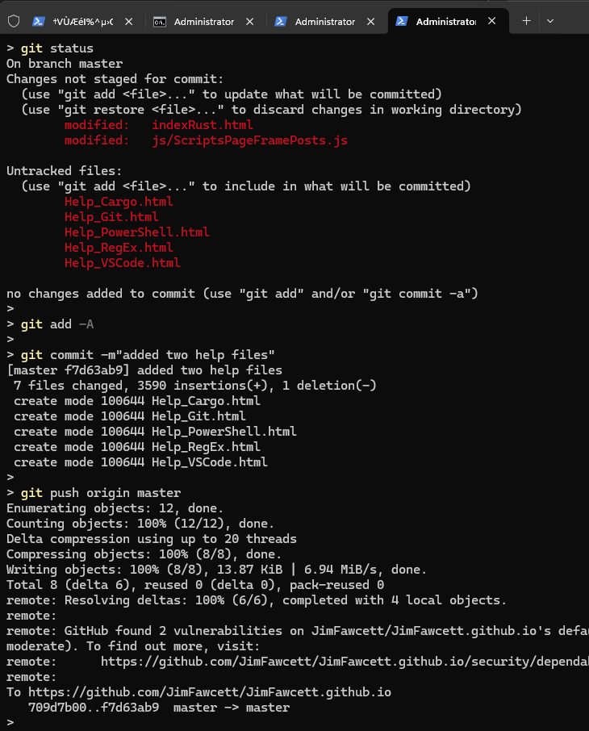

Synopsis:
Git is a distributed version control system, designed to support software development. Each client of a git repository
has a complete copy and can push and pull changes. A client can create a branch to test changes
to the repository code base, and when approved, the test branch can be merged back into the main branch.
1.0 Git Version Management:
The git version control system accepts commands from the control line to:
-
create new repositories
-
check status of a code base
-
add and commit new and/or modified code
-
push or pull changes from a remote git server
The widely-used github code host is based on storage of git repositories with documentation. This site is
hosted on github and all its code is partitioned into git repositories.
The table below summarizes often used git commands.
| Topic |
Commands |
Managing code
with git
[ show git work flow ].

|
git is a distributed version control system. It manages versions of code with one or more branches.
Typical commands are:
-
git init
create a git repository
-
git status
list all files in a managed directory tree that have been changed since last git update
-
git -A
add all new and changed files to staging area
-
git commit -m"<message>"
add staged files to local git repository
-
git push origin branch-name
send updates to remote repository
-
git pull origin branch-name
pull updates from remote repository and save locally
-
git checkout -b branch-name
create new branch
-
git checkout branch-name
switch to existing branch
|
Collaborate
using github
Create (free) account if you don't have one.
|
Submit pull request:
-
Fork remote repository if you don't have push access
-
Open remote repository in github.com and click fork button.
That creates a copy of repository in your account.
-
Clone forked repository to your local machine.
-
Navigate into local repository.
-
create a new branch:
-
git checkout -b my-proposed-changes
-
Make changes and commit:
-
git add -A
-
git commit -m"change-summary"
-
Push to your forked github repo:
-
git remote add origin url-to-your-remote-github-repo
-
git push origin my-proposed-changes
-
Create pull request on original github repo
-
Go to forked repository on your github account
-
click "Compare & pull" request
-
Provide a title and description in PR form
-
choose main branch of original repo
-
click Create pull request
|
git bite in Deployment Track